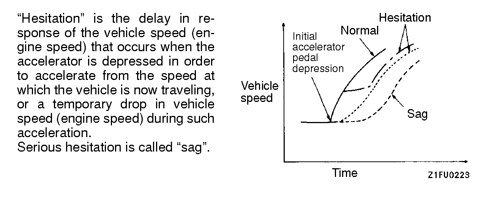
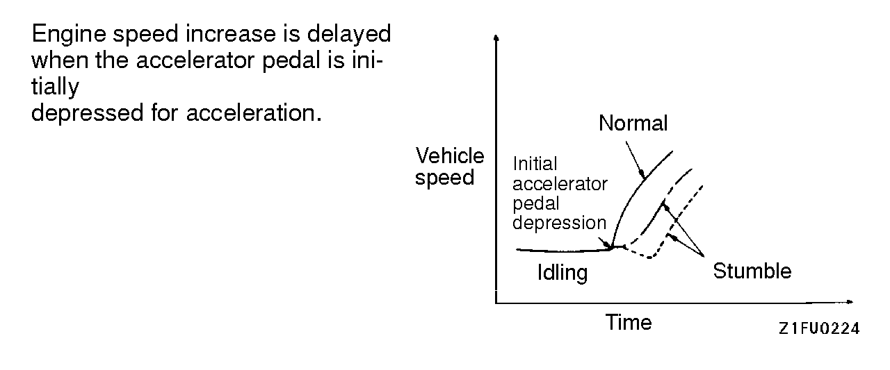

![[Previous]](https://mitsubishitechinfo.com/data/F24S/BUTTONS/fprevg.png)
![[Next]](../../../BUTTONS/fnext.png)
Trouble symptom
Inspection
procedure
No.
Communication with
scan tool is impossi-
ble. Communication with all systems is not possible.

Communication with ECM only is not possible.

Check engine/mal-
function indicator
lamp and related
parts The check engine/malfunction indicator lamp does not illuminate right after
the ignition switch is turned to the ON position. 
The check engine/malfunction indicator lamp remains illuminated and never
goes out. 
Starting
Cranks, won't start

Fires up and dies

Hard starting

Idling stability
(Improper idling) Unstable idle. (Rough idle, hunting)

Idling stability
(Improper idling) Idle speed is high. (Improper idle speed)

Idle speed is low. (Improper idle speed)

Idling stability
(Engine stalls) When the engine is cold, it stalls at idle (Die out)

When the engine becomes hot, it stalls at idle. (Die out)

The engine stalls when accelerating. (Pass out)

The engine stalls when decelerating.

Driving
Hesitation, sag or stumble

Acceleration shock

Deceleration shock

Poor acceleration

Surge

Knocking

Dieseling

Too high CO and HC concentration when idling

Generator output voltage is low (approx. 12.3V)

IM240 test failed
Transient mass emission tailpipe test failed

Purge flow test for evaporative canister failed

Pressure test for evaporative system failed

PROBLEM SYMPTOMS TABLE (FOR YOUR INFORMATION)
| Symptom | |||||||||||||||||||||||||||||||||||||||||||||||||||||||||||||||||||||||||||||||
| Starting | Won't start | The starter is used to crank the engine, but there is no combustion within the cylinders, and the engine won't start. |
|||||||||||||||||||||||||||||||||||||||||||||||||||||||||||||||||||||||||||||
| Fires up and dies | There is combustion within the cylinders, but then the engine soon stalls. | ||||||||||||||||||||||||||||||||||||||||||||||||||||||||||||||||||||||||||||||
| Hard starting | Engine starts after cranking a while. | ||||||||||||||||||||||||||||||||||||||||||||||||||||||||||||||||||||||||||||||
| Idling stability | Hunting | Engine speed doesn't remain constant; changes at idle. | |||||||||||||||||||||||||||||||||||||||||||||||||||||||||||||||||||||||||||||
| Rough idle | Usually, a judgement can be based upon the movement of the tachometer pointer, and the vibration transmitted to the steering wheel, shift lever, body, etc. This is called rough idle. |
||||||||||||||||||||||||||||||||||||||||||||||||||||||||||||||||||||||||||||||
| Incorrect idle speed |
The engine doesn't idle at the usual correct speed. | ||||||||||||||||||||||||||||||||||||||||||||||||||||||||||||||||||||||||||||||
| Engine stall (Die out) |
The engine stalls when the foot is taken from the accelerator pedal, regardless of whether the vehicle is moving or not. |
||||||||||||||||||||||||||||||||||||||||||||||||||||||||||||||||||||||||||||||
| Engine stall (Pass out) |
The engine stalls when the accelerator pedal is depressed or while it is being used. |
||||||||||||||||||||||||||||||||||||||||||||||||||||||||||||||||||||||||||||||
| Driving | Hesitation Sag |
 |
|||||||||||||||||||||||||||||||||||||||||||||||||||||||||||||||||||||||||||||
| Poor acceleration | Poor acceleration is inability to obtain an acceleration corresponding to the degree of throttle opening, even though acceleration is smooth, or the inabil- ity to reach maximum speed. |
||||||||||||||||||||||||||||||||||||||||||||||||||||||||||||||||||||||||||||||
| Stumble |
 |
||||||||||||||||||||||||||||||||||||||||||||||||||||||||||||||||||||||||||||||
| Shock | The feeling of a comparatively large impact or vibration when the engine is accelerated or decelerated. |
||||||||||||||||||||||||||||||||||||||||||||||||||||||||||||||||||||||||||||||
| Surge | This is slight acceleration and deceleration feel usually at steady, light throttle cruise. Most notable under light loads. |
||||||||||||||||||||||||||||||||||||||||||||||||||||||||||||||||||||||||||||||
| Knocking | A sharp sound like a hammer striking the cylinder walls during driving and which adversely affects driving. |
||||||||||||||||||||||||||||||||||||||||||||||||||||||||||||||||||||||||||||||
| Stopping | Run on ("Dieseling") | The condition in which the engine continues to run after the ignition switch is turned to OFF. Also called "Dieseling". |
|||||||||||||||||||||||||||||||||||||||||||||||||||||||||||||||||||||||||||||